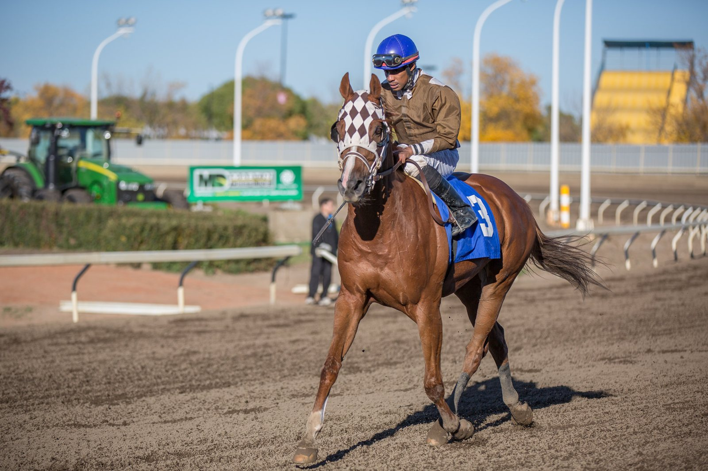

Amusingly bate a los machos en el Lagardère y Soumillon firma doblete en el domingo del Arc
Francis-Henri Graffard tomó una decisión arriesgada con Amusingly: en lugar del Prix Marcel Boussac, reservado a las potrancas, la suplementó para el Qatar Prix Jean-Luc Lagardère contra los machos. Salió bien.

Francis-Henri Graffard tomó una decisión arriesgada con Amusingly: en lugar del Prix Marcel Boussac, reservado a las potrancas, la suplementó para el Qatar Prix Jean-Luc Lagardère contra los machos. Salió bien. Con Colin Keane, la potranca batió por un cuerpo y cuarto a Folsom Blues, ya ganador de Grupo 1, y abrió el domingo del preparador antes del segundo Arc de Daryz.
«El oficio de entrenar caballos de carreras consiste en asumir la responsabilidad de tomar grandes decisiones», explicó Graffard, que ve en ella más una candidata a la Commonwealth Cup que a las Guineas.
El Boussac se resolvió en la foto. Green Empress, de Joseph O'Brien, se impuso por una cabeza a Data, de Christophe Head, tras una pelea en los últimos metros. Su preparador la describió como una hija de Saxon Warrior y de una yegua de Sea The Stars, y dejó abiertas las opciones de correr en Estados Unidos o esperar al año que viene.
Christophe Soumillon, jockey de Green Empress, repitió en el Prix de l'Opéra con Miss Scott, de John y Thady Gosden: batió por un cuerpo y medio a Precise (Ryan Moore) y por tres cuerpos más a Pink Panthera, con un tiempo de 2'02"41. Fue el primer Grupo 1 de la potranca, el quinto Opéra de Soumillon, récord en la carrera, y el doblete del día para The Thoroughbred Racing Corporation, propietaria de ambas ganadoras. «Miss Scott es una potranca de la que siempre hemos tenido muy buena opinión. La hemos llevado de forma bastante gradual», dijo Thady Gosden.
La Forêt, último Grupo 1 de la jornada, también se decidió en la foto: True Love, de Aidan O'Brien, se llevó la llegada ante Nighttime, de Christophe Head, con Puerto Rico, compañero de cuadra de la ganadora, tercero.
Fichas: C. Soumillon (jinete)
— Redacción de Galope al Día